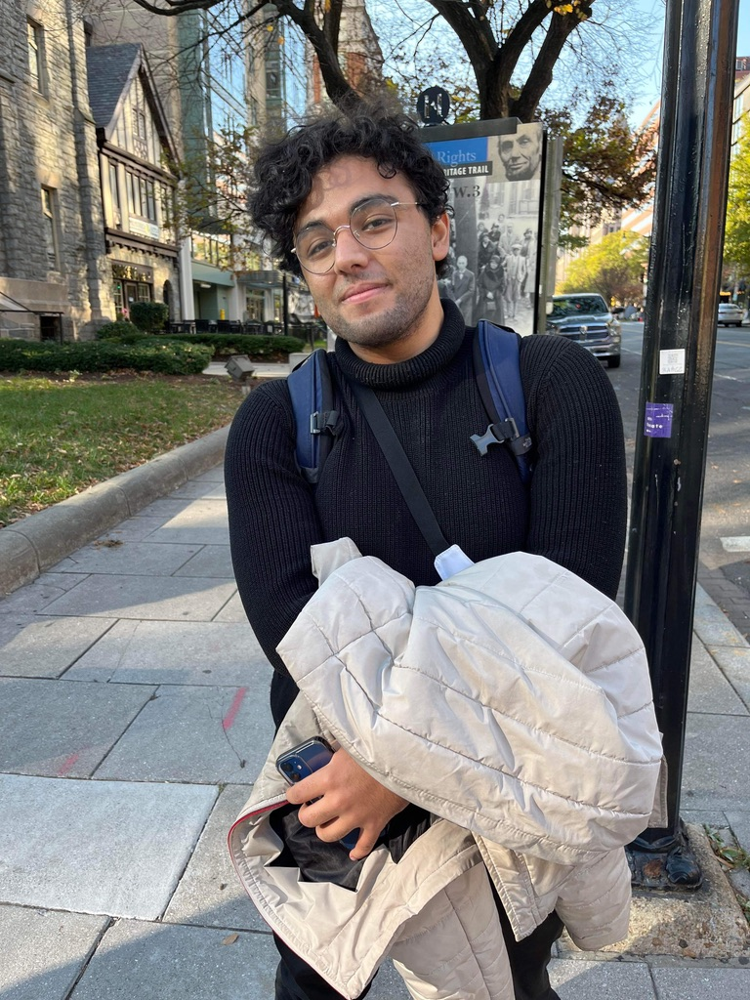

Welcome
I’m Amr Salem, a master’s student in applied mathematics and biostatistics at Case Western Reserve University, specializing in statistical genomics and machine learning applications in human health.
Currently, I’m conducting germline whole-genome analysis at Dana-Farber Cancer Institute / Harvard Medical School, investigating runs of homozygosity (ROH) as potential markers of tumor suppressor inactivation across pediatric cancer cohorts.
I also work in the UroGenetics Lab at University Hospitals Cleveland Medical Center, where I’ve developed deep learning models for kidney stone prediction and pipelines for polygenic risk score estimation.
Germline ROH analysis in pediatric cancer, deep learning for kidney stone risk prediction, PRS pipelines, EHR-integrated GWAS, and rare disease genomics.
Vice President of the Diversity Committee at CWRU. Built a confidential support hotline and led a student advocacy group for survivors of sexual violence. Read the article.
- M.S. in Biostatistics – Case Western Reserve University (expected 2025)
- B.S. in Applied Mathematics – Case Western Reserve University
- International Baccalaureate – UWC Maastricht, Netherlands
Python, R, PLINK, Snakemake, PyTorch, TensorFlow, R Shiny, Bioconductor, scikit-learn, bash scripting, statistical modeling, deep learning, genome-wide analysis.